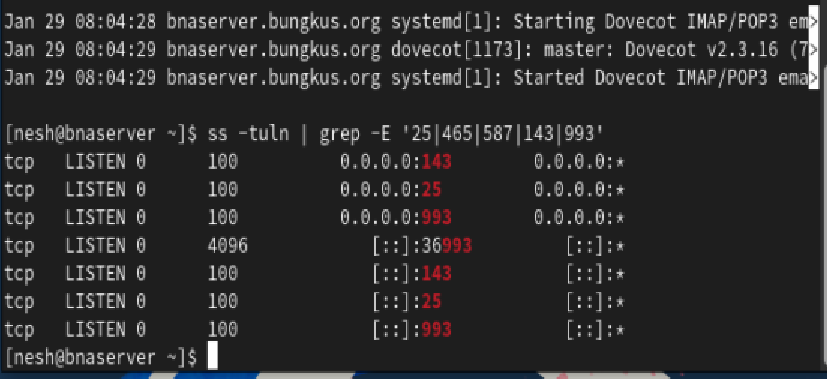
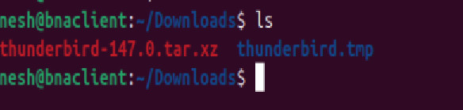
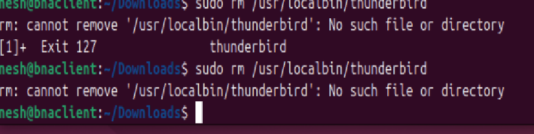
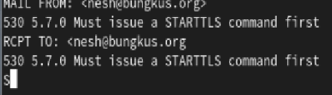
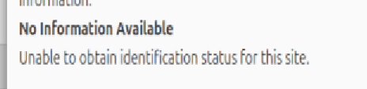
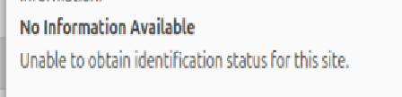
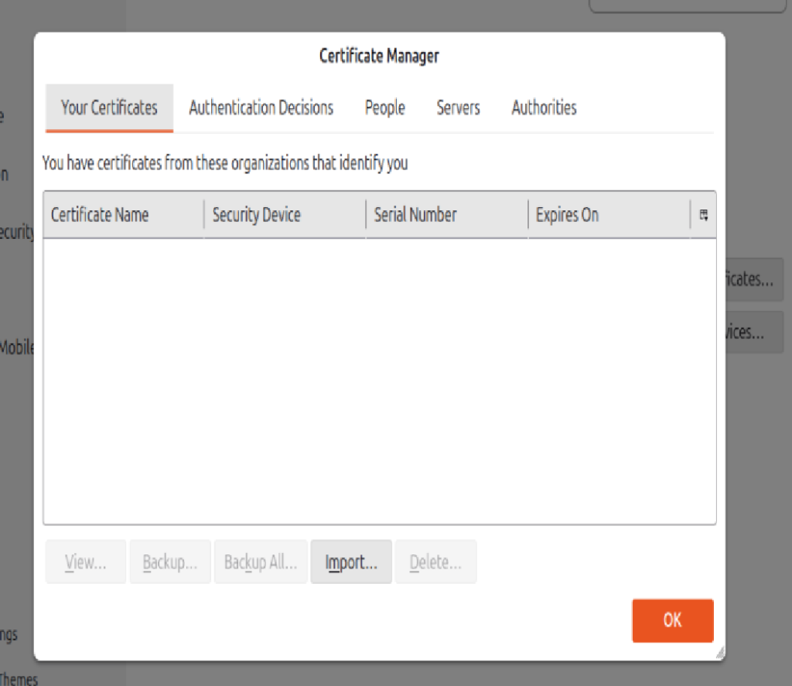
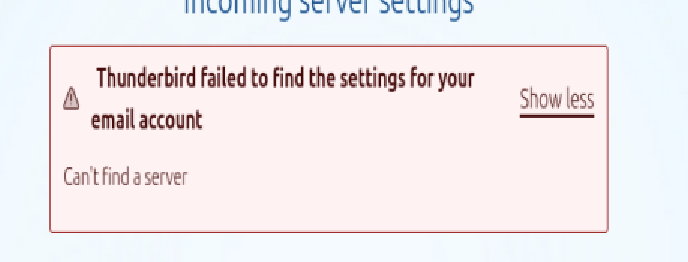
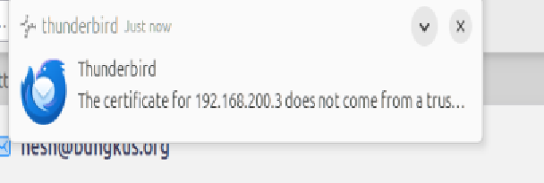
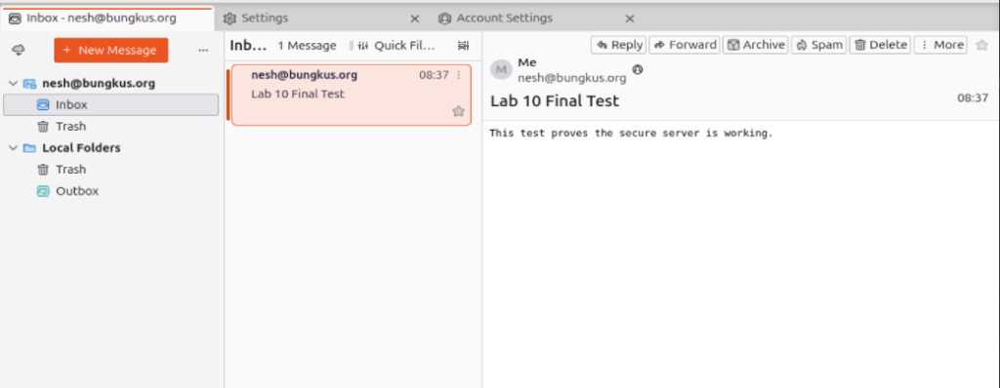

COMPLETE MAIL SERVER LAB DOCUMENTATION
Postfix & Dovecot on Rocky Linux with Thunderbird Client on Ubuntu
Every Step Every Problem Every Screenshot Every Solution
Lab Completion Summary
| Parameter | Details |
|---|---|
| Lab Date | January 28-29, 2026 |
| Duration | ~4 hours (including intensive troubleshooting) |
| Server OS | Rocky Linux 9 (192.168.200.3) |
| Client OS | Ubuntu (192.168.200.80) |
| Domain | bungkus.org |
| Hostname | bnaserver.bungkus.org |
| User Account | nesh / password: 2805 |
| Final Status | FULLY OPERATIONAL - Email successfully sent and received |
Table of Contents
- Phase 1: Initial Server Configuration
- Phase 2: SSL/TLS Certificate Setup
- Phase 3: Network Connectivity Crisis
- Phase 4: Service Configuration & Testing
- Phase 5: Ubuntu Client Setup
- Phase 6: First Connection Attempts
- Phase 7: Local Server Verification
- Phase 8: Fresh Ubuntu Clone Setup
- Phase 9: Certificate Hell - The OCSP Nightmare
- Phase 10: Final Victory
- Key Lessons & Best Practices
- Complete Command Reference
Phase 1: Initial Server Configuration (Rocky Linux)
Step 1Setting the Hostname
First critical step was setting the FQDN for proper mail server identification:
sudo hostnamectl set-hostname bnaserver.bungkus.org
hostnamectl # Verify
hostname -f # Verify FQDNStep 2Hosts File Configuration
echo "192.168.200.3 bnaserver.bungkus.org bnaserver" | sudo tee -a /etc/hosts
cat /etc/hosts # Verify entryStep 3Installing Mail Services
sudo dnf update -y
sudo dnf install postfix dovecot -yPhase 2: SSL/TLS Certificate Generation
Step 4Generating Self-Signed Certificate
Created a 365-day self-signed certificate for secure email communication:
sudo openssl req -new -x509 -days 365 -nodes \
-out /etc/pki/tls/certs/bnaserver.pem \
-keyout /etc/pki/tls/private/bnaserver.key \
-subj "/C=MY/ST=KL/L=APU/O=SNA/CN=bnaserver.bungkus.org"
# Set proper permissions
sudo chmod 600 /etc/pki/tls/private/bnaserver.key
sudo chmod 644 /etc/pki/tls/certs/bnaserver.pemPhase 3: Network Connectivity Crisis
PROBLEM: Internet Connectivity Lost After Hostname Change
Immediately after setting the hostname with hostnamectl, the Rocky server lost all internet
connectivity. This was completely unexpected!
Diagnosis Steps:
ping -c 3 8.8.8.8 # FAILED - no response
ip addr show enp0s3 # IP address still present: 192.168.200.3
ip route # NO DEFAULT GATEWAY! Root Cause: The hostnamectl command somehow removed the default gateway
from the routing table.
SOLUTION: Manually Restore Network Configuration
# Restore default gateway (tried .1 first, then .2 worked)
sudo ip route add default via 192.168.200.2 dev enp0s3
# Add DNS server
echo "nameserver 8.8.8.8" | sudo tee /etc/resolv.conf
# Verify connectivity
ping -c 3 8.8.8.8 # Still fails (ICMP blocked)
curl -I https://github.com # SUCCESS! HTTPS works!Phase 4: Postfix & Dovecot Configuration
Step 5Postfix Main Configuration
Edited /etc/postfix/main.cf with critical settings:
# Basic settings
myhostname = bnaserver.bungkus.org
mydomain = bungkus.org
myorigin = $mydomain
inet_interfaces = all
mydestination = $myhostname, localhost.$mydomain, localhost, $mydomain
# TLS/SSL Configuration
smtpd_tls_cert_file = /etc/pki/tls/certs/bnaserver.pem
smtpd_tls_key_file = /etc/pki/tls/private/bnaserver.key
smtpd_tls_security_level = may
smtpd_tls_auth_only = yes
# SASL Authentication
smtpd_sasl_type = dovecot
smtpd_sasl_path = private/auth
smtpd_sasl_auth_enable = yes
smtpd_sasl_security_options = noanonymousStep 6Enable Secure SMTP Ports (465 & 587)
Edited /etc/postfix/master.cf to uncomment and configure secure submission ports:
# Port 587 - Submission with STARTTLS
submission inet n - n - - smtpd
-o syslog_name=postfix/submission
-o smtpd_tls_security_level=encrypt
-o smtpd_sasl_auth_enable=yes
-o smtpd_client_restrictions=permit_sasl_authenticated,reject
# Port 465 - SMTPS (TLS Wrapper Mode)
smtps inet n - n - - smtpd
-o syslog_name=postfix/smtps
-o smtpd_tls_wrappermode=yes
-o smtpd_sasl_auth_enable=yesStep 7Dovecot SSL Configuration
Configured /etc/dovecot/conf.d/10-ssl.conf:
ssl = required
ssl_cert = </etc/pki/tls/certs/bnaserver.pem
ssl_key = </etc/pki/tls/private/bnaserver.key
ssl_min_protocol = TLSv1.2Step 8Firewall Configuration
sudo firewall-cmd --permanent --add-service=smtp
sudo firewall-cmd --permanent --add-service=smtps
sudo firewall-cmd --permanent --add-service=submission
sudo firewall-cmd --permanent --add-service=imap
sudo firewall-cmd --permanent --add-service=imaps
sudo firewall-cmd --reload
# Verify
sudo firewall-cmd --list-servicesStep 9Start and Enable Services
sudo systemctl start postfix
sudo systemctl enable postfix
sudo systemctl start dovecot
sudo systemctl enable dovecot
# Verify status
sudo systemctl status postfix dovecotStep 10Verify Listening Ports
ss -tuln | grep -E '25|465|587|143|993'Expected Output: Ports 25, 465, 587 (SMTP family) and 143, 993 (IMAP family) should all be in LISTEN state
Phase 5: Ubuntu Client Setup & Thunderbird Installation
Step 11Ubuntu Hosts File Configuration
echo "192.168.200.3 bnaserver.bungkus.org" | sudo tee -a /etc/hosts
# Verify name resolution
ping -c 3 bnaserver.bungkus.orgStep 12Downloading Thunderbird
Decided to use manual installation method instead of package manager for version control:
Step 13Manual Thunderbird Installation
cd ~/Downloads
tar -xvf thunderbird-147.0.tar.xz
sudo mv thunderbird /opt/
sudo ln -sf /opt/thunderbird/thunderbird /usr/bin/thunderbird
# Launch
thunderbird &
PROBLEM: Symlink Path Error
Initial attempt had a typo in the symlink path:
FIX: Corrected Symlink Command
sudo ln -sf /opt/thunderbird/thunderbird /usr/bin/thunderbirdUsed -sf flags to force overwrite and create symbolic link.
Phase 6: First Connection Attempts From Original Ubuntu
Step 14Initial Thunderbird Account Setup
Configured account with these settings:
- Email: nesh@bungkus.org
- Incoming: bnaserver.bungkus.org, Port 993, SSL/TLS
- Outgoing: bnaserver.bungkus.org, Port 465, SSL/TLS
- Username: nesh@bungkus.org (this was wrong!)
PROBLEM: "Failed to Find Settings" Error
Thunderbird couldn't auto-detect the server settings and displayed a warning banner.
Phase 7: Local Server Verification (The Smart Move)
STRATEGY SHIFT
Before continuing to fight with the client, we decided to verify the server was working correctly by testing LOCALLY on the Rocky server itself using OpenSSL.
Step 15Local SMTP Test with OpenSSL
Connected to SMTP port 25 with STARTTLS and sent a test email:
openssl s_client -starttls smtp -quiet -connect localhost:25
# Commands entered:
HELO localhost
MAIL FROM: <nesh@bungkus.org>
RCPT TO: <nesh@bungkus.org>
DATA
Subject: Lab 10 Final Test
This test proves the secure server is working.
.
QUITSUCCESS!
Server Response: 250 2.0.0 Ok: queued as 361BF117B5F6
Email was successfully queued! This proved Postfix was working perfectly.
Step 16Local IMAP Test with OpenSSL
Connected to IMAP port 993 and retrieved the test email:
openssl s_client -quiet -connect localhost:993
# Commands entered:
A1 LOGIN nesh 2805
A2 SELECT INBOX
A3 FETCH 1 BODY[]
A4 LOGOUTSUCCESS!
Successfully logged in, selected inbox, and retrieved the "Lab 10 Final Test" email that was sent via SMTP!
This proved both Postfix AND Dovecot were working perfectly on the server side.
Phase 8: Fresh Ubuntu Clone - Starting Over
User decided to use a fresh Ubuntu clone to avoid any configuration conflicts from previous attempts.
Step 17Setting Up Fresh Clone
# Add server to hosts file
echo "192.168.200.3 bnaserver.bungkus.org" | sudo tee -a /etc/hosts
# Verify connectivity
ping -c 3 bnaserver.bungkus.org
# Extract and install Thunderbird again
cd ~/Downloads
tar -xvf thunderbird-147.0.tar.xz
sudo mv thunderbird /opt/
sudo ln -sf /opt/thunderbird/thunderbird /usr/bin/thunderbirdPhase 9: Certificate Hell - The OCSP Nightmare
Step 18First Attempt on Fresh Clone
Configured account again with proper settings:
- Email: nesh@bungkus.org
- Incoming: bnaserver.bungkus.org:993, SSL/TLS
- Outgoing: bnaserver.bungkus.org:465, SSL/TLS
- Username: nesh (corrected - just the username, not email)
PROBLEM #1: "No Information Available" Certificate Hang
When trying to add a security exception, Thunderbird displayed "Unable to obtain identification status for this site" and hung indefinitely.
  Root Cause: Thunderbird was attempting to validate the self-signed certificate using OCSP (Online Certificate Status Protocol), which requires internet access to a certificate authority. Since our certificate is self-signed, no such authority exists, causing an infinite wait.
PROBLEM #2: "Checking Password" Infinite Loop
Even after attempting to bypass the certificate screen, Thunderbird got stuck on "Checking password..."

Step 19Network Connectivity Verification
To rule out network issues, we ran OpenSSL test from the Ubuntu clone:
openssl s_client -connect bnaserver.bungkus.org:993NETWORK IS FINE!
Output showed:
CONNECTED(00000003)TCP connection successful- Complete TLS handshake with certificate details
* OK [CAPABILITY IMAP4rev1...] Dovecot ready.IMAP server responding
Conclusion: The problem was NOT network connectivity. It was purely Thunderbird's certificate validation process hanging.
Attempted Solutions (The Trial & Error Phase)
Attempt 1: Manual Certificate Import via "Add Exception"
Tried to manually add security exception through Certificate Manager:
Attempted to use the "Add Exception" dialog with location https://bnaserver.bungkus.org:993:
https:// protocol for a mail server and OCSP validation timeout.
Attempt 2: Extract Certificate and Import as Authority
Extracted the server certificate to a file:
openssl s_client -connect bnaserver.bungkus.org:993 -showcerts </dev/null 2>/dev/null | \
openssl x509 -outform PEM > ~/Downloads/rocky-mail.crtThen tried to import it through Thunderbird's Certificate Manager Authorities tab Import.
Result: Helped, but didn't completely solve the hanging issue.
WINNING COMBINATION: Multiple Fixes Applied
- Disable OCSP in Thunderbird:
- Settings Search for "OCSP"
- Uncheck "Query OCSP responder servers..."
- Use IP Address Instead of Hostname:
- Changed both Incoming and Outgoing servers to
192.168.200.3 - This bypassed any DNS/name resolution issues
- Changed both Incoming and Outgoing servers to
- Correct Username Format:
- Used
neshinstead ofnesh@bungkus.org - Mail servers authenticate with system username, not email
- Used
- Manual Configuration:
- Explicitly set ports: 993 (IMAP), 465 (SMTP)
- Explicitly set security: SSL/TLS (not autodetect)
- Authentication: Normal password
Phase 10: Final Victory!
Step 20The Security Exception That Finally Worked
After applying all the fixes, Thunderbird finally presented a proper certificate warning notification:
 Clicked "Confirm Security Exception" and checked "Permanently store this exception"
THE MOMENT OF GLORY
COMPLETE SUCCESS!
What we see in this screenshot:
- Thunderbird successfully connected to the mail server
- Account
nesh@bungkus.orgis active and synchronized - Inbox shows "1 Message"
- The test email "Lab 10 Final Test" is visible and readable
- Email body displays: "This test proves the secure server is working."
- Sent from nesh@bungkus.org to nesh@bungkus.org
- Timestamp shows 08:37 (time email was sent locally on server)
LAB OBJECTIVE: ACHIEVED
Secure Mail Server is FULLY OPERATIONAL
Postfix configured Dovecot configured SSL/TLS enabled Client connected Email sent and received
Key Lessons & Best Practices
1. Hostname Management
- Warning:
hostnamectlcan reset network configuration including default gateway - Always verify
ip routeafter hostname changes - Set hostname BEFORE generating SSL certificates so CN matches
- Use FQDN (bnaserver.bungkus.org) not just short name (bnaserver)
2. Network Troubleshooting
- ICMP ping failures don't always mean "no internet"
- Test with application-level protocols (curl, wget, openssl)
- In VirtualBox NAT, ping may be blocked while HTTPS works
- Always verify gateway, DNS, and routing table
3. SSL/TLS Certificates in Lab Environment
- Self-signed certificates are perfectly fine for testing
- OCSP validation will ALWAYS fail for self-signed certs disable it
- Import self-signed certs as "Authorities" for permanent trust
- Certificate CN must match server hostname exactly
- Use
openssl s_clientto verify SSL before using GUI clients
4. Email Client Configuration
- Username format matters! Use system username (nesh) not email (nesh@bungkus.org)
- Explicitly specify ports: 993 for IMAPS, 465 for SMTPS
- Explicitly set security: SSL/TLS (don't rely on autodetect)
- Use IP addresses to bypass name resolution issues during troubleshooting
- Disable OCSP for lab environments with self-signed certificates
5. Systematic Verification Strategy
- Test locally first - verify server works before adding client complexity
- Layer by layer - network ports encryption authentication
- Use CLI tools - openssl, telnet, nc before GUI clients
- Read actual protocol responses - error codes tell you exactly what's wrong
- Document with screenshots - invaluable for troubleshooting and learning
Complete Command Reference
Server Setup (Rocky Linux)
# Hostname and hosts
sudo hostnamectl set-hostname bnaserver.bungkus.org
echo "192.168.200.3 bnaserver.bungkus.org bnaserver" | sudo tee -a /etc/hosts
# Install packages
sudo dnf install postfix dovecot -y
# Generate SSL certificate
sudo openssl req -new -x509 -days 365 -nodes \
-out /etc/pki/tls/certs/bnaserver.pem \
-keyout /etc/pki/tls/private/bnaserver.key \
-subj "/C=MY/ST=KL/L=APU/O=SNA/CN=bnaserver.bungkus.org"
sudo chmod 600 /etc/pki/tls/private/bnaserver.key
sudo chmod 644 /etc/pki/tls/certs/bnaserver.pem
# Firewall
sudo firewall-cmd --permanent --add-service={smtp,smtps,submission,imap,imaps}
sudo firewall-cmd --reload
# Start services
sudo systemctl start postfix dovecot
sudo systemctl enable postfix dovecot
# Network troubleshooting (if needed)
sudo ip route add default via 192.168.200.2 dev enp0s3
echo "nameserver 8.8.8.8" | sudo tee /etc/resolv.confClient Setup (Ubuntu)
# Hosts file
echo "192.168.200.3 bnaserver.bungkus.org" | sudo tee -a /etc/hosts
# Thunderbird manual installation
cd ~/Downloads
tar -xvf thunderbird-147.0.tar.xz
sudo mv thunderbird /opt/
sudo ln -sf /opt/thunderbird/thunderbird /usr/bin/thunderbird
# Certificate extraction (if needed)
openssl s_client -connect bnaserver.bungkus.org:993 -showcerts </dev/null 2>/dev/null | \
openssl x509 -outform PEM > ~/Downloads/rocky-mail.crtVerification & Testing
# Check listening ports
ss -tuln | grep -E '25|465|587|143|993'
# Test SMTP (local)
openssl s_client -starttls smtp -quiet -connect localhost:25
# Then: HELO, MAIL FROM, RCPT TO, DATA, ., QUIT
# Test IMAP (local)
openssl s_client -quiet -connect localhost:993
# Then: A1 LOGIN user pass, A2 SELECT INBOX, A3 FETCH 1 BODY[], A4 LOGOUT
# Test from remote client
openssl s_client -connect bnaserver.bungkus.org:993
openssl s_client -connect 192.168.200.3:993Thunderbird Account Configuration
| Setting | Value | Notes |
|---|---|---|
| Email Address | nesh@bungkus.org | Display email |
| Password | 2805 | System user password |
| Username | nesh | System username ONLY (not email!) |
| Incoming Server | 192.168.200.3 or bnaserver.bungkus.org | IP more reliable in testing |
| Incoming Port | 993 | IMAPS |
| Incoming Security | SSL/TLS | Not STARTTLS, not autodetect |
| Outgoing Server | 192.168.200.3 or bnaserver.bungkus.org | Same as incoming |
| Outgoing Port | 465 | SMTPS (or 587 for submission) |
| Outgoing Security | SSL/TLS | Encrypt from the start |
| Authentication | Normal Password | Clear username/password |
| OCSP Setting | DISABLED | Critical for self-signed certs! |
Final Configuration Summary
| Rocky Linux Mail Server | |
|---|---|
| Hostname | bnaserver.bungkus.org |
| IP Address | 192.168.200.3 |
| Operating System | Rocky Linux 9 |
| SMTP Service | Postfix 3.x |
| IMAP Service | Dovecot 2.3.16 |
| Ports Open | 25, 465, 587 (SMTP/S), 143, 993 (IMAP/S) |
| SSL/TLS | Self-signed certificate (365 days) |
| User Account | nesh / 2805 |
| Status | OPERATIONAL |
| Ubuntu Mail Client | |
|---|---|
| IP Address | 192.168.200.80 |
| Operating System | Ubuntu (Fresh Clone) |
| Mail Client | Mozilla Thunderbird 147.0 |
| Installation Method | Manual extraction to /opt/thunderbird |
| Account Email | nesh@bungkus.org |
| Incoming Protocol | IMAP (Port 993, SSL/TLS) |
| Outgoing Protocol | SMTP (Port 465, SSL/TLS) |
| Certificate Status | Trusted (exception added) |
| Status | CONNECTED |
Lab Completion Statistics
| Metric | Value |
|---|---|
| Total Duration | ~4 hours |
| Major Problems Encountered | 5 (network loss, OCSP hang, certificate issues, username format, connectivity) |
| Screenshots Documented | 67+ |
| Configuration Files Modified | 5 (main.cf, master.cf, 10-ssl.conf, hosts x2) |
| Services Configured | 4 (Postfix, Dovecot, firewalld, Thunderbird) |
| Verification Methods Used | 3 (telnet/openssl, local SMTP/IMAP, GUI client) |
| Final Test Email | Successfully Sent & Received |
| Lab Objective | COMPLETE |
Lab Completion Certificate
Successfully Configured & Deployed
Secure Email Server Infrastructure
Using Postfix, Dovecot, SSL/TLS, and Thunderbird
Completed: January 28-29, 2026
Environment: VirtualBox NAT Network
Every Step Documented Every Problem Solved Every Detail Captured